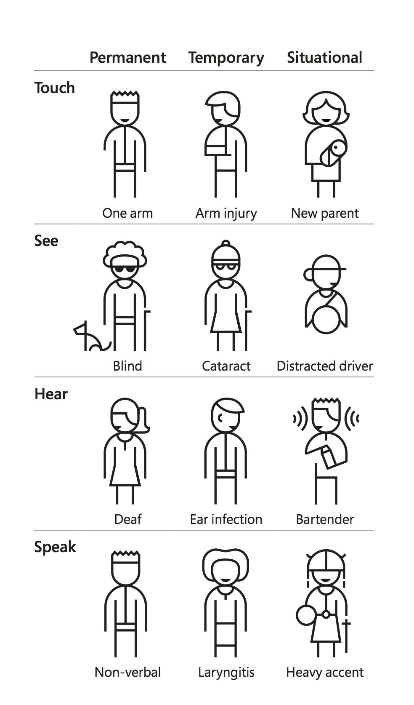

Accessible Web Mapping Apps
Kelly Hutchins
Tao Zhang
slides: https://arcg.is/1OPTCu
Wide range of disabilities
Source: Inclusive design at Microsoft
How is Esri doing?
- Reviewing products internally for compliance
- Fixing accessibility issues
- Working accessibility into new features
- Sharing knowledge and best practices

Structure example
Popup settings
Popup settings
- The browser does not recognize the second structure as a level 2 heading.
- The <span> element is semantically neutral.